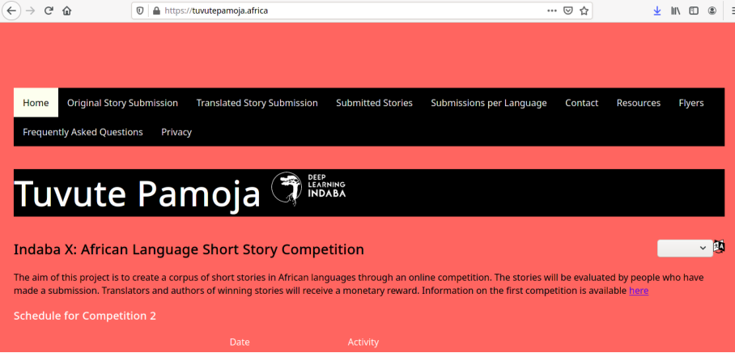
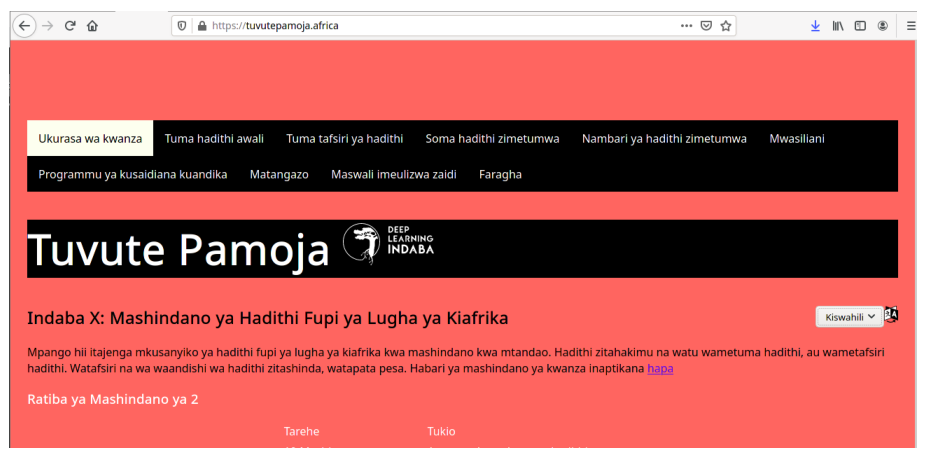
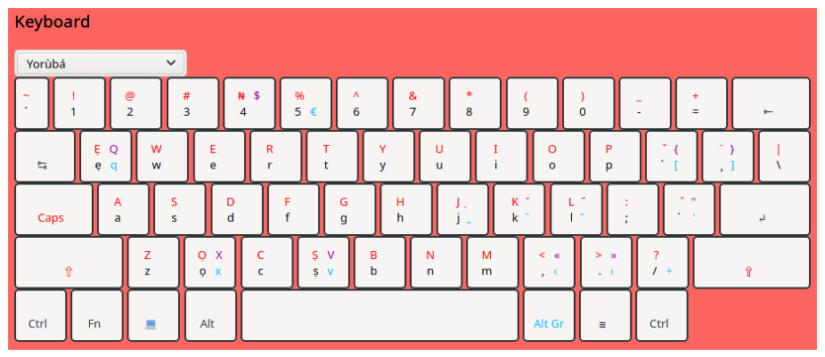

RAIL 2021Traduction automatique
Un système open source pour le crowdsourcing d'un corpus de nouvelles en langues africaines
Traduction automatique, non relue par un humain. L'article original est la version de référence ; les phrases soulignées sont celles dont les contrôles automatiques n'étaient pas sûrs.
Proceedings of the 2nd Workshop on Resources for African Indigenous Languages (RAIL 2021), Journal of the Digital Humanities Association of Southern Africa.
Traduction par Ernst van Gassen (Arktos AI Lab), sous licence CC BY-SA 4.0 comme l'original. Réutilisation permise avec attribution ; partage des adaptations dans les mêmes conditions. Les auteurs originaux n'ont pas relu ni approuvé cette traduction.
Texte brut réutilisable, avec sa licence : Français · LICENCE
Affiliations
Muite, Benson K.
Kichakato Kizito
Adresses e-mail retirées pour la protection de la vie privée. Elles figurent dans le PDF original.
Résumé
De nombreuses langues africaines disposent de peu de corpus en libre accès pour le développement d'applications technologiques telles que les correcteurs grammaticaux, les correcteurs orthographiques, la transcription automatique de la parole, la synthèse vocale de texte et les outils de traduction automatique. Cela peut entraîner un déclin de tous les traits culturels associés aux peuples qui parlent ces langues. Pour permettre la collecte de corpus textuels et la préservation à long terme des caractéristiques culturelles positives, les considérations de conception et la mise en œuvre d'un système de collecte et d'évaluation de concours de nouvelles en ligne open source sont décrites. Le système est écrit en PHP et peut être déployé relativement économiquement sur des serveurs d'hébergement partagés disponibles auprès de nombreux fournisseurs d'hébergement africains. Cela permet la possibilité d'une collection décentralisée d'histoires, ainsi que l'adaptation et l'amélioration du logiciel à différents types de concours de nouvelles. Le logiciel a été utilisé pour deux concours de nouvelles à travers le continent africain dans le but de fournir des histoires adaptées aux enfants. L'organisation du concours en ligne a permis une participation provenant d'une grande variété de lieux, mais la plupart des soumissions proviennent de pays africains avec une infrastructure technologique relativement bonne. La préparation d’une troisième compétition est en cours.
Mots-clés
Externalisation collective, Littérature africaine, Création de corpus
1 Introduction
L'Afrique possède une grande variété de langues et de dialectes linguistiques. Beaucoup d'entre eux ont de riches traditions orales et n'ont été utilisés que récemment pour la communication électronique écrite, comme les médias sociaux, le courrier électronique et les forums Internet. De nombreux pays africains ont choisi d'utiliser l'anglais ou le français comme langue d'éducation, cependant, l'internet a démocratisé l'accès aux espaces d'expression publique, et avec cette liberté, les gens ont commencé à s'exprimer dans leurs propres langues - le projet Indigenous Tweets (Scannell 2021) documente l'utilisation de langues qui ne sont pas largement répandues sur une plateforme de médias sociaux. En s'attendant à ce que cette tendance croisse pour au moins certaines langues africaines, il y aura un intérêt et un besoin pour des outils de traitement numérique des langues africaines. Pour développer de tels outils, des données linguistiques sont nécessaires. Une façon de collecter ces données est par le crowd sourcing. Les efforts complémentaires de collecte de nouvelles multilingues incluent StoryWeaver en Inde (Story Weaver 2021) et l'African Story Book en Afrique du Sud (Saide 2021). Aucun de ces projets n'a actuellement un logiciel ouvertement disponible pour que d'autres personnes puissent l'utiliser dans le crowdsourcing de nouvelles, et ils se concentrent uniquement sur la littératie, sans beaucoup d'efforts pour utiliser les matériaux collectés afin de permettre le développement d'outils de traitement du langage naturel.
2 Considérations sur la conception de la plateforme de crowdsourcing
Alors que la plupart des gens en Afrique utilisent des téléphones pour la communication plutôt que des ordinateurs, l'accès à Internet est en croissance. Les sites Web permettent une communication plus facile pour les écrits plus longs tels que les histoires courtes, et sont donc un bon premier choix de plate-forme. D'autres considérations pour une plateforme basée sur le web sont :
- De nombreuses langues d'Afrique sont étroitement liées à l'identité ethnique. Cela peut être une source de tension et a provoqué des conflits. La plateforme doit permettre les soumissions anonymes et/ou les soumissions par un mandataire.
- De nombreux pays africains mettent fortement l’accent sur l’anglais et le français comme langues d’enseignement. La traduction à partir des langues africaines s'est principalement concentrée sur la traduction vers l'anglais ou le français, pourtant de nombreuses langues africaines sont étroitement liées et peuvent avoir des concepts qui ne s'expriment pas bien en anglais et en français, il est donc important de développer des corpus qui permettent la création d'outils de traduction entre les langues africaines.
- De nombreux auteurs et traducteurs effectuant une soumission peuvent ne pas connaître l'anglais, donc la plateforme de soumission devrait être disponible dans plusieurs langues, idéalement dans toutes les langues dans lesquelles les soumissions peuvent être faites.
- Étant donné que de nombreuses langues africaines ne sont pas utilisées ou étudiées à l'école, les compétences linguistiques des personnes qui soumettent peuvent ne pas être très élevées, mais elles peuvent être intéressées à les améliorer. Des liens vers les ressources numériques disponibles devraient être mis à disposition et des efforts devraient être faits pour permettre la rétroaction sur les soumissions.
- Le logiciel devrait être facile et peu coûteux à déployer en Afrique pour permettre l'organisation indépendante de concours de nouvelles.
- Le logiciel devrait être facile pour les développeurs de logiciels basés en Afrique à contribuer.
- Le logiciel devrait autant que possible respecter la vie privée des personnes qui soumettent des histoires et des traductions, et leur permettre de garder des informations personnellement identifiables privées si elles choisissent de le faire.
3 Mise en œuvre de la plateforme de crowdsourcing
La première considération est le langage de programmation à utiliser. Python (Python Software Foundation 2021), Ruby (Ruby Community 2021), PHP (PHP Community 2021) et Javascript (ECMA International 2021) ont été considérés. Python et Ruby ont une grande utilité dans le développement web, cependant ils ont un faible support pour l'hébergement partagé en Afrique et nécessitent généralement des serveurs de spécifications plus élevées que PHP - le support de l'hébergement partagé peut être amélioré, mais dans le cadre de ce projet, cela n'était pas faisable. Javascript est également utilisé pour développer le côté serveur d'une application web, en plus de rendre le côté client d'une application web interactive, cependant, il a encore beaucoup moins de soutien pour l'hébergement partagé en Afrique. Ainsi, PHP a été choisi comme langage de programmation pour la programmation serveur, avec une certaine quantité de Javascript, en particulier pour créer des claviers logiciels. De nombreux fournisseurs de services cloud en Afrique utilisent le logiciel cPanel (cPanel LLC 2021) pour l'hébergement partagé géré avec jusqu'à 10 GB de stockage pour des prix compris entre 1 et 5 dollars par mois. Cela prend en charge l'hébergement d'une application web PHP et d'une base de données.
Le logiciel se compose de :
- Une base de données de récits originaux accompagnée des coordonnées de l'auteur ou de son représentant
- Une base de données des histoires traduites, avec les coordonnées du traducteur ou de son mandataire
- Une base de données des auteurs, des traducteurs ou de leurs mandataires et des langues dans lesquelles ils peuvent voter
- Une base de données avec des votes et des commentaires sur chaque histoire originale ou traduite
- Un programme PHP côté serveur pour permettre la soumission d'histoires et de traductions
- Composantes HTML et Javascript côté client pour permettre la saisie de caractères spéciaux à l'aide d'un clavier logiciel et la traduction du site Web, la soumission d'histoires, la soumission de traductions, la visualisation d'histoires et le vote
Le site web peut être consulté à l'adresse https://tuvutepamoja.africa. Les figures 1 et 2 montrent la première page du site en anglais et en kiswahili. La figure 3 montre un clavier logiciel adapté à la saisie du Yorùbá qui comporte un certain nombre de caractères accentués que de nombreuses personnes qui ne sont pas des dactylographes formées doivent voir pour pouvoir les utiliser dans leur écriture.
Le logiciel a été développé ouvertement en utilisant le contrôle de version sur https://notabug.org/tuvutepamoja et est publié sous la licence publique générale GNU (Free Software Foundation 2021b). Le dépôt https://notabug.org héberge le développement de GnuSocial (GnuSocial Community 2021), un site de réseautage social open source également écrit en PHP qui peut être traduit en langues africaines. Une tentative a été faite d'utiliser GnuSocial pour permettre la communication entre les personnes intéressées à promouvoir la compétition dans les langues africaines qu'elles connaissent, mais l'engagement sur cette plate-forme était faible. Actuellement, un forum en ligne utilisant le logiciel open source FluxBB (FluxBB Community 2021), est utilisé pour permettre la communication publique par les personnes intéressées par le projet. Le forum est disponible sur https://ingxoxo.tuvutepamoja.africa/.

Figure 1: Première page en anglais.

Figure 2 : Page d'accueil en kiswahili.
Pour de nombreux contributeurs possibles, la traduction de logiciels n'est pas aussi excitante que la rédaction de leurs propres histoires courtes, donc cela n'a pas encore été couronné de succès. La traduction de tracts faisant la publicité du concours de nouvelles était une tâche moins ardue et de nombreuses personnes ont contribué à cet effort, permettant l'utilisation de plateformes de médias sociaux par des personnes souhaitant promouvoir leur langue.

Figure 3 : Clavier virtuel - Yorùbá affiché.
4 Travaux ultérieurs
Des limites de mots ont été utilisées pour indiquer la longueur des soumissions acceptables. Cependant, un mot dans une langue peut correspondre à bien plus de mots dans une autre langue. Les travaux futurs consisteront à trouver une mesure raisonnable pour estimer le contenu équivalent entre les langues plutôt que d'utiliser les comptes de mots.
Le vote sur la pertinence des histoires par les participants peut être controversé. Pour certaines langues africaines, il est facile d'identifier un panel d'experts. Pour d'autres, le consensus sur la forme écrite de la langue, et sur les différents dialectes est encore en développement. Des modèles communautaires de participation sont nécessaires pour améliorer davantage cela. Dans de nombreux pays où une langue domine, comme au Rwanda, la standardisation linguistique a été plus facile à accomplir. De nombreux pays africains sont multilingues, et certaines langues sont utilisées à travers les frontières, ce qui rend la coopération intergouvernementale très utile dans les efforts de standardisation linguistique. La coopération avec les institutions poursuivant le travail de standardisation des langues africaines serait également utile, bien que de nombreuses institutions, lorsqu'elles existent, soient souvent mal financées. Pour les langues parlées par un petit nombre de locuteurs qui forment une minorité au sein de la population d'un pays, les organisations culturelles communautaires ou les groupes de médias sociaux sont la seule ressource disponible et facilement accessible.
Le vote s'effectue en fournissant aux auteurs et traducteurs d'histoires un identifiant qu'ils entrent sur le site web pour pouvoir émettre leur vote. Leurs votes sont ensuite stockés dans une base de données séparée de l'identifiant dans le but de permettre l'anonymat lorsqu'il y a plus de deux votants pour des récits dans une langue particulière. Il serait bon d'améliorer le système pour qu'il soit crypté et que l'administrateur ne puisse pas déterminer pour quoi chaque participant a voté. Ceci est techniquement difficile car on peut également utiliser des journaux de serveur et des horodatages de base de données pour corréler l'activité. Néanmoins, le vote électronique a été fait à d'autres fins qui ont des exigences plus élevées en matière de sécurité et de vérification de l'identité, de sorte qu'il devrait être possible d'intégrer cela dans le logiciel actuel.
Le logiciel a été partiellement traduit en Kiswahili. À l'heure actuelle, cela se fait en créant une liste de chaînes de caractères pour chaque composant du site Web destiné à l'utilisateur. De nombreux projets logiciels open source utilisent des fichiers formatés pour Gettext (Free Software Foundation 2021a) pour stocker les traductions. Il serait bon d'utiliser un tel système.
Des travaux supplémentaires sont également nécessaires pour rendre les claviers logiciels plus faciles à utiliser, en particulier pour les langues éthio-sémitiques telles que l'amharique. Des claviers souples ont été ajoutés au logiciel pour permettre l'utilisation de l'orthographe qui peut ne pas être disponible sur les claviers d'ordinateur anglais et français standard disponibles sur les ordinateurs dans de nombreux pays africains. Toutes les langues n'ont pas une orthographe standardisée, donc une adaptation et une collaboration avec des linguistes sont nécessaires pour bien faire cela. Un certain nombre de contributeurs ont indiqué utiliser des claviers sur leurs téléphones mobiles qui ont toutes les lettres dont ils ont besoin pour leurs langues. Permettre la création, la soumission et la consultation d'histoires via une application mobile en plus d'un site web peut également être une option à envisager.
Cette note s'est principalement concentrée sur les considérations techniques liées à la création d'un logiciel pour accueillir une compétition en ligne de nouvelles dans les langues africaines afin de collecter un corpus. Un article supplémentaire analysera les corpus recueillis et inclura les points de vue de ceux qui ont aidé à obtenir, écrire et traduire des nouvelles.
5 Conclusion
On s'attend à ce que de nombreuses langues d'Afrique deviennent éteintes, ou fusionnées et standardisées avec d'autres langues similaires utilisées dans la même région, par exemple comme cela s'est produit avec le Runyakitara. Documenter le riche héritage culturel est important pour une meilleure compréhension et les éventuelles leçons qui peuvent être tirées de la diversité linguistique actuelle. Documenter les cultures est également utile pour permettre la compréhension interculturelle. L'ère numérique nécessite des outils numériques, et bien que la plupart des développements technologiques permettant la numérisation aient eu lieu dans les pays anglophones, ceux-ci ont été adaptés aux conditions locales dans les pays ayant des contextes culturels différents. Des exemples notables d’outils numériques de traitement du langage naturel sont issus de la Russie, de la Chine et du Japon, certains de ces outils ayant été en partie développés par des entreprises commerciales de médias sociaux ayant une forte présence locale. En fournissant un logiciel open source pour permettre des concours de nouvelles pour les langues africaines, on espère stimuler la collecte de nouvelles à un coût relativement faible, améliorer les compétences en lecture et en écriture dans les langues africaines, et développer des outils de traitement du langage naturel pour les langues africaines.
Remerciements
Ce travail a bénéficié d'une subvention de 4 000 $ accordée par le Centre de recherches pour le développement international, administrée par Knowledge for All (https://www.k4all.org) dans le cadre du programme de bourses d'innovation IndabaX-AI4D 2020. L’auteur remercie William Agbo, Liané Van Den Bergh, Audrey Mbogho, Cascious Mofokeng, Itaru Ohta, Kevin Scannell, Juan Steyn, Benito Trollip, Lilian Wanzare, et Constantine Yuka pour leurs nombreuses discussions utiles et leur aide dans la gestion des concours. L'auteur tient également à remercier toutes les personnes qui ont participé aux compétitions, soit en soumettant une histoire, en soumettant une traduction, en sollicitant des contributions auprès d'autres personnes, en traduisant un dépliant ou en vérifiant les histoires originales et traduites soumises.
Références
cPanel LLC (2021), 'cpanel website'. URL: https://www.cpanel.net
ECMA International (2021), 'Javascript specification'. https://www.ecma-
URL: international.org/publications-andstandards/standards/ecma-262/
FluxBB Community (2021), 'Fluxbb website'. URL: https://fluxbb.org
Free Software Foundation (2021a), 'Gettext website'. URL: https://www.gnu.org/software/gettext/
Free Software Foundation (2021b), 'Gnu general public license'. URL: https://www.gnu.org/licenses/gpl-3.0.en.html
GnuSocial Community (2021), 'Gnusocial website'. URL: https://www.gnusocial.rocks/
PHP Community (2021), 'Php website'. URL: https://www.php.net/
Python Software Foundation (2021), 'Python website'. URL: https://www.python.org/
Ruby Community (2021), 'Ruby website'. URL: https://www.ruby-lang.org/
Saide (2021), 'African story book website'. URL: https://www.africanstorybook.org/
Scannell, K. (2021), 'Indigenous tweets'. URL: http://indigenoustweets.com/
Story Weaver (2021), 'Story weaver website'. URL: https://storyweaver.org.in/weave_a_story_campaign
English et Français
An Open Source System for Crowd Sourcing an African Language Short Story Corpus
Un système open source pour le crowdsourcing d'un corpus de nouvelles en langues africaines
Affiliations
Muite, Benson K.
Kichakato Kizito
Affiliations
Muite, Benson K.
Kichakato Kizito
Abstract
Résumé
Many African languages have few open access corpora for use in developing technological applications such as grammar checkers, spell checkers, speech to text, text to speech and machine translation tools. This may lead to a decline in all cultural traits associated with the peoples that speak these languages. To enable collection of textual corpora, and long term preservation of positive cultural characteristics, the design considerations and implementation of an open source online short story competition collection and evaluation system are described. The system is written in PHP, and can be relatively cheaply deployed on shared hosting servers available from many African hosting providers. This allows for the possibility of a decentralized collection of stories, as well as adaptation, and improvements of the software to different types of short story competitions. The software has been used for two short story competitions across the African continent with the aim of providing stories suitable for children. Holding the competition online has enabled participation from a wide variety of locations, but most of the submissions have came from African countries with relatively good information technology infrastructure. Preparation for a third competition is in progress.
De nombreuses langues africaines disposent de peu de corpus en libre accès pour le développement d'applications technologiques telles que les correcteurs grammaticaux, les correcteurs orthographiques, la transcription automatique de la parole, la synthèse vocale de texte et les outils de traduction automatique. Cela peut entraîner un déclin de tous les traits culturels associés aux peuples qui parlent ces langues. Pour permettre la collecte de corpus textuels et la préservation à long terme des caractéristiques culturelles positives, les considérations de conception et la mise en œuvre d'un système de collecte et d'évaluation de concours de nouvelles en ligne open source sont décrites. Le système est écrit en PHP et peut être déployé relativement économiquement sur des serveurs d'hébergement partagés disponibles auprès de nombreux fournisseurs d'hébergement africains. Cela permet la possibilité d'une collection décentralisée d'histoires, ainsi que l'adaptation et l'amélioration du logiciel à différents types de concours de nouvelles. Le logiciel a été utilisé pour deux concours de nouvelles à travers le continent africain dans le but de fournir des histoires adaptées aux enfants. L'organisation du concours en ligne a permis une participation provenant d'une grande variété de lieux, mais la plupart des soumissions proviennent de pays africains avec une infrastructure technologique relativement bonne. La préparation d’une troisième compétition est en cours.
Keywords
Mots-clés
Crowd sourcing, African Literature, Corpus Creation
Externalisation collective, Littérature africaine, Création de corpus
1 Introduction
1 Introduction
Africa has a great variety of languages and language dialects. Many of these have rich oral traditions, and have only recently been used for written electronic communication, such as social media, email and internet forums. Many African countries have chosen to use English or French as the language of education, however the internet has democratized access to spaces for public expression, and with this freedom, people have begun to express themselves in their own languages - the Indigenous Tweets project (Scannell 2021) documents the use of languages that are not widespread on one social media platform. Expecting this trend to grow for at least some African languages, there will be interest and need for digital language processing tools for African languages. To develop such tools, language data is required. One way to collect this data is by crowd sourcing. Complementary multilingual short story collection efforts include StoryWeaver in India (Story Weaver 2021) and the African Story Book in South Africa (Saide 2021). Neither of these at present has openly available software for other people to use in crowd sourcing short stories, and they only focus on literacy, without much effort made for use of the collected materials to enable the development of natural language processing tools.
L'Afrique possède une grande variété de langues et de dialectes linguistiques. Beaucoup d'entre eux ont de riches traditions orales et n'ont été utilisés que récemment pour la communication électronique écrite, comme les médias sociaux, le courrier électronique et les forums Internet. De nombreux pays africains ont choisi d'utiliser l'anglais ou le français comme langue d'éducation, cependant, l'internet a démocratisé l'accès aux espaces d'expression publique, et avec cette liberté, les gens ont commencé à s'exprimer dans leurs propres langues - le projet Indigenous Tweets (Scannell 2021) documente l'utilisation de langues qui ne sont pas largement répandues sur une plateforme de médias sociaux. En s'attendant à ce que cette tendance croisse pour au moins certaines langues africaines, il y aura un intérêt et un besoin pour des outils de traitement numérique des langues africaines. Pour développer de tels outils, des données linguistiques sont nécessaires. Une façon de collecter ces données est par le crowd sourcing. Les efforts complémentaires de collecte de nouvelles multilingues incluent StoryWeaver en Inde (Story Weaver 2021) et l'African Story Book en Afrique du Sud (Saide 2021). Aucun de ces projets n'a actuellement un logiciel ouvertement disponible pour que d'autres personnes puissent l'utiliser dans le crowdsourcing de nouvelles, et ils se concentrent uniquement sur la littératie, sans beaucoup d'efforts pour utiliser les matériaux collectés afin de permettre le développement d'outils de traitement du langage naturel.
2 Crowd Sourcing Platform Design Considerations
2 Considérations sur la conception de la plateforme de crowdsourcing
While most people in Africa, uses telephones for communication rather than computers, internet access is growing. Websites enable easier communication for longer pieces of writing such as short stories, and so are a good first platform choice. Further considerations for a web based platform are:
Alors que la plupart des gens en Afrique utilisent des téléphones pour la communication plutôt que des ordinateurs, l'accès à Internet est en croissance. Les sites Web permettent une communication plus facile pour les écrits plus longs tels que les histoires courtes, et sont donc un bon premier choix de plate-forme. D'autres considérations pour une plateforme basée sur le web sont :
Many of Africa's languages are closely linked to ethnic identity. This can be a source of tension and has caused conflict. The platform should allow anonymous submissions and/or submission by a proxy.
De nombreuses langues d'Afrique sont étroitement liées à l'identité ethnique. Cela peut être une source de tension et a provoqué des conflits. La plateforme doit permettre les soumissions anonymes et/ou les soumissions par un mandataire.
Many African countries have a strong focus on English and French as languages of education. Translation from African languages has also primarily focused on translating to English or French, yet many African languages are closely related and may have concepts not well expressed in English and French, so it is important to develop corpora that enable creation of translation tools between African languages.
De nombreux pays africains mettent fortement l’accent sur l’anglais et le français comme langues d’enseignement. La traduction à partir des langues africaines s'est principalement concentrée sur la traduction vers l'anglais ou le français, pourtant de nombreuses langues africaines sont étroitement liées et peuvent avoir des concepts qui ne s'expriment pas bien en anglais et en français, il est donc important de développer des corpus qui permettent la création d'outils de traduction entre les langues africaines.
Many authors and translators making a submission may not know English, so the submission platform should be available in several languages, ideally every language submissions can be made in.
De nombreux auteurs et traducteurs effectuant une soumission peuvent ne pas connaître l'anglais, donc la plateforme de soumission devrait être disponible dans plusieurs langues, idéalement dans toutes les langues dans lesquelles les soumissions peuvent être faites.
Since many African languages are not used in or studied at school, the language ability of people who submit may not be very high, but they may be interested in improving it. Links to available digital resources should be made available and efforts should be made to allow for feedback on submissions.
Étant donné que de nombreuses langues africaines ne sont pas utilisées ou étudiées à l'école, les compétences linguistiques des personnes qui soumettent peuvent ne pas être très élevées, mais elles peuvent être intéressées à les améliorer. Des liens vers les ressources numériques disponibles devraient être mis à disposition et des efforts devraient être faits pour permettre la rétroaction sur les soumissions.
The software should be easy and inexpensive to deploy within Africa to allow for independent organization of short story competitions.
Le logiciel devrait être facile et peu coûteux à déployer en Afrique pour permettre l'organisation indépendante de concours de nouvelles.
The software should and be easy for software developers based in Africa to contribute to.
Le logiciel devrait être facile pour les développeurs de logiciels basés en Afrique à contribuer.
The software should as much as possible respect privacy of people submitting stories and translations, and enable them to keep personally identifying information private should they choose to do so.
Le logiciel devrait autant que possible respecter la vie privée des personnes qui soumettent des histoires et des traductions, et leur permettre de garder des informations personnellement identifiables privées si elles choisissent de le faire.
3 Crowd Sourcing Platform Implementation
3 Mise en œuvre de la plateforme de crowdsourcing
The first consideration is the programming language to use. Python (Python Software Foundation 2021), Ruby (Ruby Community 2021), PHP (PHP Community 2021) and Javascript (ECMA International 2021) were considered. Python and Ruby have great use in web development, however they have poor support for shared hosting in Africa and typically require higher specification servers than PHP - shared hosting support can be improved, but in the time frame of this project, this was not feasible. Javascript is also used for developing the server side of a web application, in addition to making the client side of a web application interactive, however, it again has much less support for shared hosting in Africa. Thus, PHP was chosen as the programming language to use for server programming, with some amount of Javascript, in particular to create soft keyboards. Many cloud providers in Africa use the software cPanel (cPanel LLC 2021) for managed shared hosting with upto 10 GB of storage for prices between $1 and $5 per month. This has support for hosting a PHP web application and a database.
La première considération est le langage de programmation à utiliser. Python (Python Software Foundation 2021), Ruby (Ruby Community 2021), PHP (PHP Community 2021) et Javascript (ECMA International 2021) ont été considérés. Python et Ruby ont une grande utilité dans le développement web, cependant ils ont un faible support pour l'hébergement partagé en Afrique et nécessitent généralement des serveurs de spécifications plus élevées que PHP - le support de l'hébergement partagé peut être amélioré, mais dans le cadre de ce projet, cela n'était pas faisable. Javascript est également utilisé pour développer le côté serveur d'une application web, en plus de rendre le côté client d'une application web interactive, cependant, il a encore beaucoup moins de soutien pour l'hébergement partagé en Afrique. Ainsi, PHP a été choisi comme langage de programmation pour la programmation serveur, avec une certaine quantité de Javascript, en particulier pour créer des claviers logiciels. De nombreux fournisseurs de services cloud en Afrique utilisent le logiciel cPanel (cPanel LLC 2021) pour l'hébergement partagé géré avec jusqu'à 10 GB de stockage pour des prix compris entre 1 et 5 dollars par mois. Cela prend en charge l'hébergement d'une application web PHP et d'une base de données.
The software consists of:
Le logiciel se compose de :
A database of original stories along with the contact details of the author or their proxy
Une base de données de récits originaux accompagnée des coordonnées de l'auteur ou de son représentant
A database of translated stories, with the contact details of the translator or their proxy
Une base de données des histoires traduites, avec les coordonnées du traducteur ou de son mandataire
A database of authors, translators or their proxies and the languages in which they can vote
Une base de données des auteurs, des traducteurs ou de leurs mandataires et des langues dans lesquelles ils peuvent voter
A database with votes for and comments on each original story or translated story
Une base de données avec des votes et des commentaires sur chaque histoire originale ou traduite
A server side PHP program to allow for stories and translations to be submitted
Un programme PHP côté serveur pour permettre la soumission d'histoires et de traductions
Client side HTML and Javascript components to enable input of special characters using a soft keyboard and translation of the website, submission of stories, submission of translations, viewing of stories and voting
Composantes HTML et Javascript côté client pour permettre la saisie de caractères spéciaux à l'aide d'un clavier logiciel et la traduction du site Web, la soumission d'histoires, la soumission de traductions, la visualisation d'histoires et le vote
The website can be viewed at https://tuvutepamoja.africa. Figures 1 and 2 show the front page of the website in English and in Kiswahili. Figure 3 shows a soft keyboard suitable for entering Yorùbá which has a number of accented characters which many people who are not trained typists need to see to be able to use in their writing.
Le site web peut être consulté à l'adresse https://tuvutepamoja.africa. Les figures 1 et 2 montrent la première page du site en anglais et en kiswahili. La figure 3 montre un clavier logiciel adapté à la saisie du Yorùbá qui comporte un certain nombre de caractères accentués que de nombreuses personnes qui ne sont pas des dactylographes formées doivent voir pour pouvoir les utiliser dans leur écriture.
The software was openly developed using version control on https://notabug.org/tuvutepamoja and is released under the GNU general public license (Free Software Foundation 2021b). The repository https://notabug.org hosts the development of GnuSocial (GnuSocial Community 2021), an open source social networking site also written in PHP which can be translated into African languages. An attempt was made to use GnuSocial to enable communication between people interested in promoting the competition in African languages that they know, however engagement on this platform was low. At present an online forum using the open source software FluxBB (FluxBB Community 2021), is being used to enable public communication by people interested in the project. The forum is available at https://ingxoxo.tuvutepamoja.africa/.
Le logiciel a été développé ouvertement en utilisant le contrôle de version sur https://notabug.org/tuvutepamoja et est publié sous la licence publique générale GNU (Free Software Foundation 2021b). Le dépôt https://notabug.org héberge le développement de GnuSocial (GnuSocial Community 2021), un site de réseautage social open source également écrit en PHP qui peut être traduit en langues africaines. Une tentative a été faite d'utiliser GnuSocial pour permettre la communication entre les personnes intéressées à promouvoir la compétition dans les langues africaines qu'elles connaissent, mais l'engagement sur cette plate-forme était faible. Actuellement, un forum en ligne utilisant le logiciel open source FluxBB (FluxBB Community 2021), est utilisé pour permettre la communication publique par les personnes intéressées par le projet. Le forum est disponible sur https://ingxoxo.tuvutepamoja.africa/.
Figure 1: English front page.
Figure 1: Première page en anglais.
Figure 2: Kiswahili front page.
Figure 2 : Page d'accueil en kiswahili.
For many possible contributors, translation of software is not as exciting as writing their own short stories, so this has not yet been successful. Translating flyers advertising the short story competition was less of a task and many people contributed to this effort, enabling use of social media platforms by people willing to promote their language.
Pour de nombreux contributeurs possibles, la traduction de logiciels n'est pas aussi excitante que la rédaction de leurs propres histoires courtes, donc cela n'a pas encore été couronné de succès. La traduction de tracts faisant la publicité du concours de nouvelles était une tâche moins ardue et de nombreuses personnes ont contribué à cet effort, permettant l'utilisation de plateformes de médias sociaux par des personnes souhaitant promouvoir leur langue.
Figure 3: Soft Keyboard - Yorùbá shown.
Figure 3 : Clavier virtuel - Yorùbá affiché.
4 Further Work
4 Travaux ultérieurs
Word limits were used to indicate the length of acceptable submissions. However, a word in one language may correspond to many more words in another language. Further work will involve finding a reasonable measure of estimating equivalent content between languages rather than using word counts.
Des limites de mots ont été utilisées pour indiquer la longueur des soumissions acceptables. Cependant, un mot dans une langue peut correspondre à bien plus de mots dans une autre langue. Les travaux futurs consisteront à trouver une mesure raisonnable pour estimer le contenu équivalent entre les langues plutôt que d'utiliser les comptes de mots.
Voting on suitability of stories by participants can be contentious. For some African languages it is easy to identify a panel of experts. For others, consensus on the written form of the language, and on different dialects is still developing. Community models for participation are required to further enhance this. In many countries where one language dominates, such as Rwanda, language standardization has been easier to accomplish. Many African countries are multilingual, and some languages are used across borders, making intergovernmental cooperation very helpful in language standardization efforts. Cooperation with institutions pursuing African language standardization work, would also be helpful, though many such institutions, when they exist are often poorly funded. For languages with a small number of speakers who form a minority section of the population of a country, community cultural organizations or social media groups are the only available and easily accessible resource.
Le vote sur la pertinence des histoires par les participants peut être controversé. Pour certaines langues africaines, il est facile d'identifier un panel d'experts. Pour d'autres, le consensus sur la forme écrite de la langue, et sur les différents dialectes est encore en développement. Des modèles communautaires de participation sont nécessaires pour améliorer davantage cela. Dans de nombreux pays où une langue domine, comme au Rwanda, la standardisation linguistique a été plus facile à accomplir. De nombreux pays africains sont multilingues, et certaines langues sont utilisées à travers les frontières, ce qui rend la coopération intergouvernementale très utile dans les efforts de standardisation linguistique. La coopération avec les institutions poursuivant le travail de standardisation des langues africaines serait également utile, bien que de nombreuses institutions, lorsqu'elles existent, soient souvent mal financées. Pour les langues parlées par un petit nombre de locuteurs qui forment une minorité au sein de la population d'un pays, les organisations culturelles communautaires ou les groupes de médias sociaux sont la seule ressource disponible et facilement accessible.
Voting is done by issuing story authors and translators with an id which they enter on the website to be able to cast their votes. Their votes are then stored in a separate database from the id with the aim of enabling anonymity when there are more than two voters for stories in a particular language. It would be good to improve the system so that it is encrypted and the administrator cannot determine what each participant voted for. This is technically challenging since one can also possibly use server logs and database timestamps to correlate activity. Nevertheless, electronic voting has been done for other purposes which have greater security and identity verification requirements, so it should be possible to incorporate this in the current software.
Le vote s'effectue en fournissant aux auteurs et traducteurs d'histoires un identifiant qu'ils entrent sur le site web pour pouvoir émettre leur vote. Leurs votes sont ensuite stockés dans une base de données séparée de l'identifiant dans le but de permettre l'anonymat lorsqu'il y a plus de deux votants pour des récits dans une langue particulière. Il serait bon d'améliorer le système pour qu'il soit crypté et que l'administrateur ne puisse pas déterminer pour quoi chaque participant a voté. Ceci est techniquement difficile car on peut également utiliser des journaux de serveur et des horodatages de base de données pour corréler l'activité. Néanmoins, le vote électronique a été fait à d'autres fins qui ont des exigences plus élevées en matière de sécurité et de vérification de l'identité, de sorte qu'il devrait être possible d'intégrer cela dans le logiciel actuel.
The software has been partially translated into Kiswahili. At present this is done by creating a list of strings for each user facing component on the website. Many open source software projects use files formatted for Gettext (Free Software Foundation 2021a) to store translations. It would be good to use such a system.
Le logiciel a été partiellement traduit en Kiswahili. À l'heure actuelle, cela se fait en créant une liste de chaînes de caractères pour chaque composant du site Web destiné à l'utilisateur. De nombreux projets logiciels open source utilisent des fichiers formatés pour Gettext (Free Software Foundation 2021a) pour stocker les traductions. Il serait bon d'utiliser un tel système.
Further work on making the soft keyboards easier to use is also needed, in particular for Ethio-Semitic languages such as Amharic. Soft keyboards were added to the software to enable use of orthography that may not be available on standard English and French computer keyboards available on computers in many African countries. Not all languages have standardized orthography, so adaptation and collaboration with linguists is required to do this well. A number of contributors indicated using keyboards on their mobile phones which have all the letters they need for their languages. Enabling creation, submission and viewing of stories through a mobile application in addition to a website may also be something to consider adding.
Des travaux supplémentaires sont également nécessaires pour rendre les claviers logiciels plus faciles à utiliser, en particulier pour les langues éthio-sémitiques telles que l'amharique. Des claviers souples ont été ajoutés au logiciel pour permettre l'utilisation de l'orthographe qui peut ne pas être disponible sur les claviers d'ordinateur anglais et français standard disponibles sur les ordinateurs dans de nombreux pays africains. Toutes les langues n'ont pas une orthographe standardisée, donc une adaptation et une collaboration avec des linguistes sont nécessaires pour bien faire cela. Un certain nombre de contributeurs ont indiqué utiliser des claviers sur leurs téléphones mobiles qui ont toutes les lettres dont ils ont besoin pour leurs langues. Permettre la création, la soumission et la consultation d'histoires via une application mobile en plus d'un site web peut également être une option à envisager.
This note has mainly focused on the technical considerations in creating software to host an online competition for stories in African languages to collect a corpus. An additional article will analyze the collected corpora, and include viewpoints of those who helped obtain, write and translate short stories.
Cette note s'est principalement concentrée sur les considérations techniques liées à la création d'un logiciel pour accueillir une compétition en ligne de nouvelles dans les langues africaines afin de collecter un corpus. Un article supplémentaire analysera les corpus recueillis et inclura les points de vue de ceux qui ont aidé à obtenir, écrire et traduire des nouvelles.
5 Conclusion
5 Conclusion
It is expected that many of Africa's languages will become extinct, or merged and standardized with other similar languages that are used in the same region, for example as has happened with Runyakitara. Documenting the rich cultural legacy is important for improved understanding and possible lessons that can be learned from the current linguistic diversity. Documenting the cultures is also helpful to enable cross-cultural understanding. The digital age requires digital tools, and while most of the technological developments enabling digitization have occurred in English speaking countries, these have been adapted for local conditions in countries with different cultural contexts. Notable examples of digital natural language processing tools have originated in Russia, China and Japan, some of these tools have been partly developed by commercial social media companies with a strong local presence. By providing open source software to enable short story competitions for African languages, it is hoped to stimulate further collection of short stories at relatively low cost, improve reading and writing skills in African languages, and develop natural language processing tools for African languages.
On s'attend à ce que de nombreuses langues d'Afrique deviennent éteintes, ou fusionnées et standardisées avec d'autres langues similaires utilisées dans la même région, par exemple comme cela s'est produit avec le Runyakitara. Documenter le riche héritage culturel est important pour une meilleure compréhension et les éventuelles leçons qui peuvent être tirées de la diversité linguistique actuelle. Documenter les cultures est également utile pour permettre la compréhension interculturelle. L'ère numérique nécessite des outils numériques, et bien que la plupart des développements technologiques permettant la numérisation aient eu lieu dans les pays anglophones, ceux-ci ont été adaptés aux conditions locales dans les pays ayant des contextes culturels différents. Des exemples notables d’outils numériques de traitement du langage naturel sont issus de la Russie, de la Chine et du Japon, certains de ces outils ayant été en partie développés par des entreprises commerciales de médias sociaux ayant une forte présence locale. En fournissant un logiciel open source pour permettre des concours de nouvelles pour les langues africaines, on espère stimuler la collecte de nouvelles à un coût relativement faible, améliorer les compétences en lecture et en écriture dans les langues africaines, et développer des outils de traitement du langage naturel pour les langues africaines.
Acknowledgements
Remerciements
This work has benefited from a $4,000 grant provided by the International Research Development Centre administered by Knowledge for All (https://www.k4all.org) through the 2020 IndabaX-AI4D Innovation Grant program. The author thanks William Agbo, Liané Van Den Bergh, Audrey Mbogho, Cascious Mofokeng, Itaru Ohta, Kevin Scannell, Juan Steyn, Benito Trollip, Lilian Wanzare, and Constantine Yuka for many helpful discussions and assistance in running the competitions. The author also wishes to acknowledge all the people who participated in the competitions, by either submitting a story, submitting a translation, soliciting contributions from others, translating a flyer or checking submitted original and translated stories.
Ce travail a bénéficié d'une subvention de 4 000 $ accordée par le Centre de recherches pour le développement international, administrée par Knowledge for All (https://www.k4all.org) dans le cadre du programme de bourses d'innovation IndabaX-AI4D 2020. L’auteur remercie William Agbo, Liané Van Den Bergh, Audrey Mbogho, Cascious Mofokeng, Itaru Ohta, Kevin Scannell, Juan Steyn, Benito Trollip, Lilian Wanzare, et Constantine Yuka pour leurs nombreuses discussions utiles et leur aide dans la gestion des concours. L'auteur tient également à remercier toutes les personnes qui ont participé aux compétitions, soit en soumettant une histoire, en soumettant une traduction, en sollicitant des contributions auprès d'autres personnes, en traduisant un dépliant ou en vérifiant les histoires originales et traduites soumises.
References
Références
cPanel LLC (2021), 'cpanel website'. URL: https://www.cpanel.net
ECMA International (2021), 'Javascript specification'. https://www.ecma-
URL: international.org/publications-andstandards/standards/ecma-262/
FluxBB Community (2021), 'Fluxbb website'. URL: https://fluxbb.org
Free Software Foundation (2021a), 'Gettext website'. URL: https://www.gnu.org/software/gettext/
Free Software Foundation (2021b), 'Gnu general public license'. URL: https://www.gnu.org/licenses/gpl-3.0.en.html
GnuSocial Community (2021), 'Gnusocial website'. URL: https://www.gnusocial.rocks/
PHP Community (2021), 'Php website'. URL: https://www.php.net/
Python Software Foundation (2021), 'Python website'. URL: https://www.python.org/
Ruby Community (2021), 'Ruby website'. URL: https://www.ruby-lang.org/
Saide (2021), 'African story book website'. URL: https://www.africanstorybook.org/
Scannell, K. (2021), 'Indigenous tweets'. URL: http://indigenoustweets.com/
Story Weaver (2021), 'Story weaver website'. URL: https://storyweaver.org.in/weave_a_story_campaign
Références (d'après OpenAlex)
La liste de références propre à l'article reste dans le texte ci-dessus. Cette liste provient d'OpenAlex (CC0) et peut en différer. Les titres sont donnés dans leur langue d'origine.
- GNU General Public LicenseChristopher Negus, 2015, Wiley eBooks · DOI
Comment citer
Citez l'article original pour son contenu et ses résultats. Citez la traduction lorsque vous reprenez la formulation traduite.
Citer l'article original
Muite, B. K. et Kizito, K. (2021). An Open Source System for Crowd Sourcing an African Language Short Story Corpus. Journal of the Digital Humanities Association of Southern Africa. https://upjournals.up.ac.za/index.php/dhasa/article/view/3823
@article{muite2021open,
title = {{An Open Source System for Crowd Sourcing an African Language Short Story Corpus}},
author = {Benson K. Muite and Kichakato Kizito},
journal = {Journal of the Digital Humanities Association of Southern Africa},
year = {2021},
url = {https://upjournals.up.ac.za/index.php/dhasa/article/view/3823}
}TY - JOUR AU - Muite, Benson K. AU - Kizito, Kichakato TI - An Open Source System for Crowd Sourcing an African Language Short Story Corpus JO - Journal of the Digital Humanities Association of Southern Africa PY - 2021 UR - https://upjournals.up.ac.za/index.php/dhasa/article/view/3823 LA - en ER -
Citer cette traduction
Muite, B. K. et Kizito, K. (2026). Un système open source pour le crowdsourcing d'un corpus de nouvelles en langues africaines (E. van Gassen, trad.). Traduction de "An Open Source System for Crowd Sourcing an African Language Short Story Corpus" (Journal of the Digital Humanities Association of Southern Africa, 2021). Talitha, Arktos AI Lab. https://talithapapers.com/fr/papers/2021.rail-jdhasa.3823/
@misc{muite2021open-fr,
author = {Benson K. Muite and Kichakato Kizito},
translator = {van Gassen, Ernst},
title = {{Un système open source pour le crowdsourcing d'un corpus de nouvelles en langues africaines}},
year = {2026},
publisher = {Arktos AI Lab},
language = {french},
url = {https://talithapapers.com/fr/papers/2021.rail-jdhasa.3823/},
note = {Traduction de An Open Source System for Crowd Sourcing an African Language Short Story Corpus (Journal of the Digital Humanities Association of Southern Africa, 2021). Traduction automatique, non relue par un humain.}
}TY - GEN AU - Muite, Benson K. AU - Kizito, Kichakato TA - van Gassen, Ernst TI - Un système open source pour le crowdsourcing d'un corpus de nouvelles en langues africaines PY - 2026 PB - Arktos AI Lab UR - https://talithapapers.com/fr/papers/2021.rail-jdhasa.3823/ LA - fr N1 - Traduction de An Open Source System for Crowd Sourcing an African Language Short Story Corpus (Journal of the Digital Humanities Association of Southern Africa, 2021). Traduction automatique, non relue par un humain. ER -